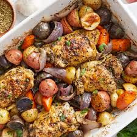

Roasted Chicken

Sheet-Pan Roasted Chicken & Vegetables
This dish is a great example of a "one-pan meal." It’s perfect for your website because it allows for beautiful photography of vibrant vegetables and golden-brown chicken all in one shot.
Short Description: An effortless, healthy dinner where a whole chicken (or pieces) and seasonal root vegetables are roasted together on a single tray. The juices from the chicken season the vegetables as they cook, creating a deeply flavorful, complete meal.
Recipe (Serves 4):
- Ingredients:
- 1 Whole chicken (approx. 1.5kg-2kg) or 4 large chicken thighs
- 4-5 large Potatoes, cubed
- 3-4 large Carrots, sliced into chunks
- 1 Onion, quartered
- 3 tbsp Olive oil
- Fresh herbs (thyme or rosemary), salt, pepper, and 1 lemon
- Instructions:
- Prep: Preheat your oven to 200°C (400°F). Pat the chicken dry with paper towels—this is the secret to crispy skin.
- Season: Place the chicken in the centre of a large roasting pan. Stuff the cavity with the lemon halves and herbs.
- Vegetables: Surround the chicken with the potatoes, carrots, and onions. Drizzle everything with olive oil and season generously with salt and pepper.
- Roast:Bake for about 1 hour and 15–20 minutes. The chicken is done when the juices run clear and the internal temperature hits 75°C (165°F)
- Rest: Let the chicken rest for 15 minutes before carving to keep it juicy.
Home